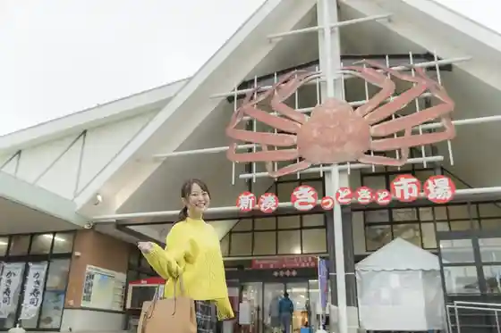
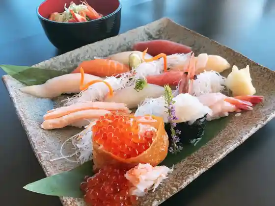
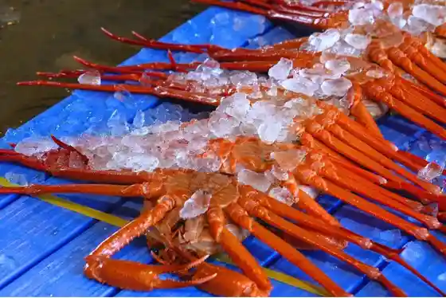
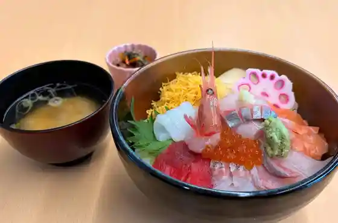

Shinminato Kittokito Market
Imizu, Toyama · 0766-84-1233 · Official / source link

Minato Hisashi Shi (Shinminato Kittokito City Jonai)
Imizu, Toyama · 0766-84-1233 · Official / source link

Shinminato Fishing Port no Hiru Seri Kengaku
Imizu, Toyama · 0766-84-1233 · Official / source link

AKAMA Toyama
Imizu, Toyama · 0766-75-9180 · Official / source link
Roadside Station Marugoto Imizu
Imizu, Toyama · 0766-83-0111 · Official / source link

Okigae Tokoro Uchikawa KIPPO Okigaetokoro Kippo
Imizu, Toyama · 0766-84-7996 · Official / source link
Banya Kafe
Imizu, Toyama · 0766-75-7477 · Official / source link
Uchikawa Sabo Gatsu to Usagi
Imizu, Toyama · 0766-75-8832 · Official / source link
Toyama Prefectural Daigaku Himawari Hatake
Imizu, Toyama · Official / source link
Adobencha Garden Imizu Adobencha Garden Imizu
Imizu, Toyama · 0766-56-0366 · Official / source link
Hojo Wakasa Ya
Imizu, Toyama · 0766-84-0844 · Official / source link
Shinminato O Kashi Tokoro no Village Ya
Imizu, Toyama · 0120-437-037 · Official / source link
Suihen no Minka Hotel Kamome to Umineko
Imizu, Toyama · Official / source link
Kappo
Imizu, Toyama · 0766-84-1331 · Official / source link
Sakana Kan Kashi Ho
Imizu, Toyama · 0766-82-2687 · Official / source link
Nakagawa Mochi Mise
Imizu, Toyama · 0766-82-3070 · Official / source link
Shinminato Kani Koya
Imizu, Toyama · 0766-84-8051 · Official / source link
Engi Shikinai Kushita Shrine
Imizu, Toyama · 0766-54-1733 · Official / source link
Ban Ya no Sushi Kosugi Mise
Imizu, Toyama · 0766-30-5151 · Official / source link
Asahi Sushi
Imizu, Toyama · 0766-55-3200 · Official / source link
Naniwa Sushi
Imizu, Toyama · 0766-82-6800 · Official / source link
Sushitake
Imizu, Toyama · 0766-82-3329 · Official / source link
Sasazushi
Imizu, Toyama · 0766-84-1100 · Official / source link
Kiyoshi Sushi
Imizu, Toyama · 0766-84-0151 · Official / source link
Katsuhiro Sushi
Imizu, Toyama · 0766-86-1828 · Official / source link
Edo Ichi
Imizu, Toyama · 0766-86-2558 · Official / source link
Asuka I Akai
Imizu, Toyama · Official / source link
Shiro Ebi Ryo Kankosen
Imizu, Toyama · 0766-82-7707 · Official / source link
Maruei Seisakusho Kosugi Kojo
Imizu, Toyama · 0766-55-5800 · Official / source link
Shiroebi Ichiban Ya Tanabe Suisan
Imizu, Toyama · 0766-84-4476 · Official / source link
Imizu Kaijo Kanko
Imizu, Toyama · 0766-82-2226 · Official / source link
Uchikawa / Eiga (Jinsei no Yakusoku) Rogachi
Imizu, Toyama · 0766-84-4649 · Official / source link
Guriru Hayashi
Imizu, Toyama · 0766-56-5827 · Official / source link
Resutoran to Shio
Imizu, Toyama · Official / source link
Yoshoku Purovansu
Imizu, Toyama · 0766-52-4836 · Official / source link
Imizu Takeuchi Genzo Memorial Museum
Imizu, Toyama · 0766-55-3288 · Official / source link
Men Ya Iroha
Imizu, Toyama · 0766-56-0999 · Official / source link
Sankyo Tateyama Arumi Kojo
Imizu, Toyama · 0766-20-2120 · Official / source link
Hamayaki Ki Hamakaze (Shinminato Kittokito City Jonai)
Imizu, Toyama · 0766-84-1233 · Official / source link
Sogyo Bunsei Nananen Ryotei Naka Village Ro Sogyobunsei 7 Nen
Imizu, Toyama · 0766-55-0063 · Official / source link
Jun Sai Ai no Kaze
Imizu, Toyama · 0766-82-7257 · Official / source link
Nihonryori Shiosai
Imizu, Toyama · 0766-82-4111 · Official / source link
Kappo Matsuyama
Imizu, Toyama · 0766-82-4100 · Official / source link
Yugengaisha Hechima Sangyo
Imizu, Toyama · 0766-52-5454 · Official / source link
Shinminato Kankosen
Imizu, Toyama · 0766-82-1830 · Official / source link
Imizu Tobo (Takumi Village) Imizushitobo (Takumi no Sato)
Imizu, Toyama · 0766-54-1201 · Official / source link
Kaiomaru Park / Kaio Bado Park (Toyamashinko Rinkai Yacho Sono) Kaiomarupaku / Kaiobadopaku (Toyamashinkorinkaiyachoen)
Imizu, Toyama · 0766-82-5181 · Official / source link
Kenmin Park Taiko Yama Land
Imizu, Toyama · 0766-56-6116 · Official / source link
Toyamaken Kodomomirai Kan
Imizu, Toyama · 0766-56-9000 · Official / source link
Kenmin Koen Shinko Forest
Imizu, Toyama · 0766-84-0950 · Official / source link
Shinminato Mariina (Kairyu Marin Park) Shinminatomariina (Kairyumarinpaku)
Imizu, Toyama · 0766-86-5440 · Official / source link
Kamo Shrine (Shitaji Ku, Kyu Shita Village)
Imizu, Toyama · 0766-59-2503 · Official / source link
Imizu Oshima Ehon Kan
Imizu, Toyama · 0766-52-6780 · Official / source link
Imizu Kosugi Tenjikan
Imizu, Toyama · 0766-55-3338 · Official / source link
Imizu Shinminato Museum
Imizu, Toyama · 0766-83-0800 · Official / source link
Kosugi Maruyama Iseki Park (Asuka Kojin no Kan) Kosugimaruyamaisekikoen (Asukakojin no Yakata)
Imizu, Toyama · 0766-56-4369 · Official / source link
Suijo Tani Iseki
Imizu, Toyama · 0766-51-6637 · Official / source link
Nakayama Minami Iseki Park
Imizu, Toyama · 0766-51-6637 · Official / source link
Otsuka Burial Mound
Imizu, Toyama · 0766-51-6637 · Official / source link
Hojo Tsu Hachiman Shrine
Imizu, Toyama · 0766-84-3449 · Official / source link
Kushida Shin Iseki Park
Imizu, Toyama · 0766-51-6637 · Official / source link
Kusuri Kachi Teraike Park
Imizu, Toyama · 0766-51-6680 · Official / source link
Gyomin Yoshito Tsuka
Imizu, Toyama · 0766-51-6677 · Official / source link
Uchikawa
Imizu, Toyama · 0766-84-4649 · Official / source link
Toyamashinko Lookout
Imizu, Toyama · 0766-84-8292 · Official / source link
Kaiomaru Park / Hansen Kaiomaru / Shiawase no Beru Kekkonshiki / Shinminato Kankosen Kaiomarupaku / Hansenkaiomaru / Shiawase no Berukekkonshiki / Shinminatokankosen
Imizu, Toyama · 0766-82-5181 · Official / source link
Shinminato Bridge
Imizu, Toyama · 0766-84-8292 · Official / source link
Murata Tatami Seisakusho
Imizu, Toyama · 0766-53-1035 · Official / source link
Shinminato Sushi Juku
Imizu, Toyama · 0766-54-6813 · Official / source link
Imizu Yakusho
Imizu, Toyama · 0766-51-6600 · Official / source link